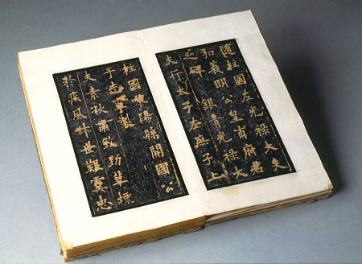

義助慰安婦 —— 李敖百件珍藏義賣藝術品（第26件） 品 名：B3. 歐陽詢「皇甫君碑」舊拓 預估價：6 萬 成交價：（保留） 說 明： 日本人嚮往中國文化，由於它的科技進步，許多中國文化的寶貝皆經其加工處理，如故宮所收藏歐陽詢的「九成宮碑」，日本的二玄社就將其照相印出來，二玄社也印了歐陽詢的「皇甫君碑」，乃根據日本東京博物館收藏的碑而來，但李敖所收藏的更好。 
日本人嚮往中國文化，由於它的科技進步，許多中國文化的寶貝皆經其加工處理，如故宮所收藏歐陽詢的「九成宮碑」，日本的二玄社就將其照相印出來，二玄社也印了歐陽詢的「皇甫君碑」，乃根據日本東京博物館收藏的碑而來，但李敖所收藏的更好。